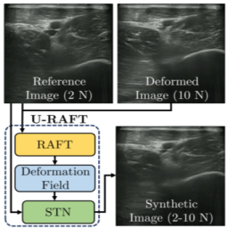
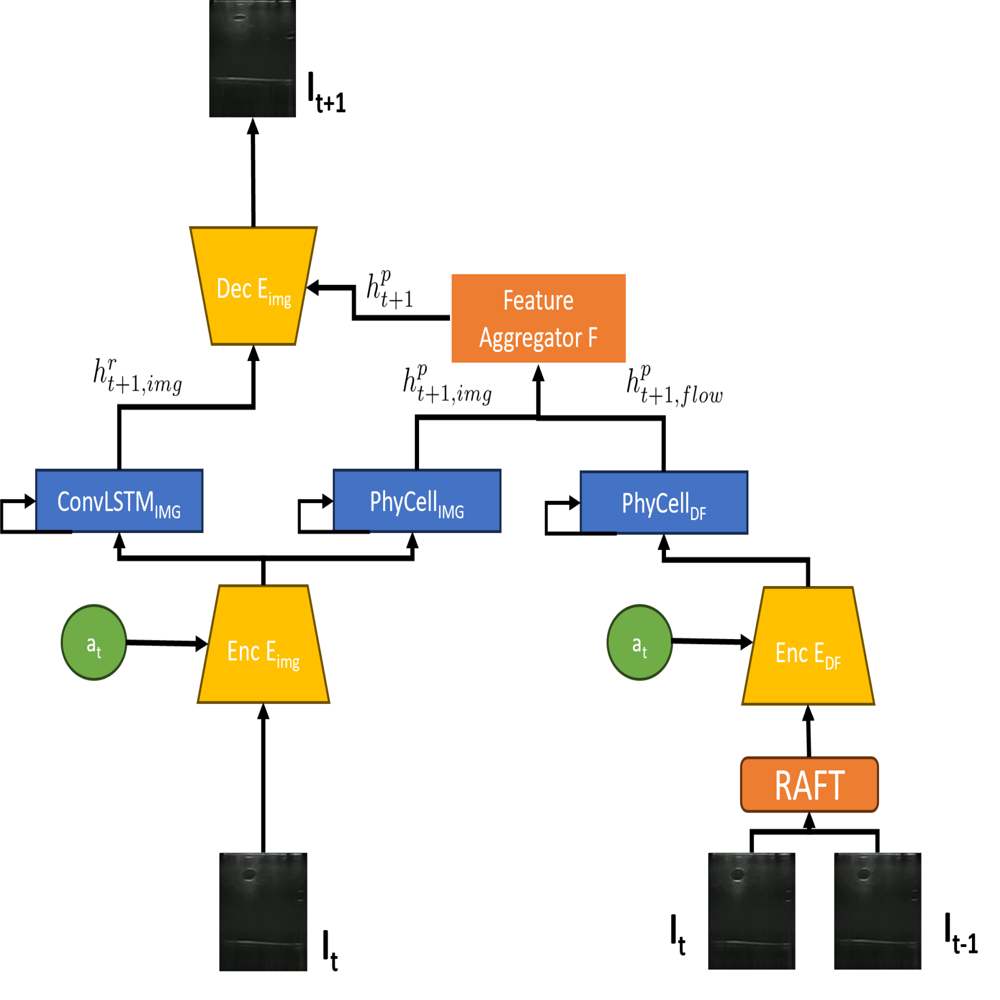
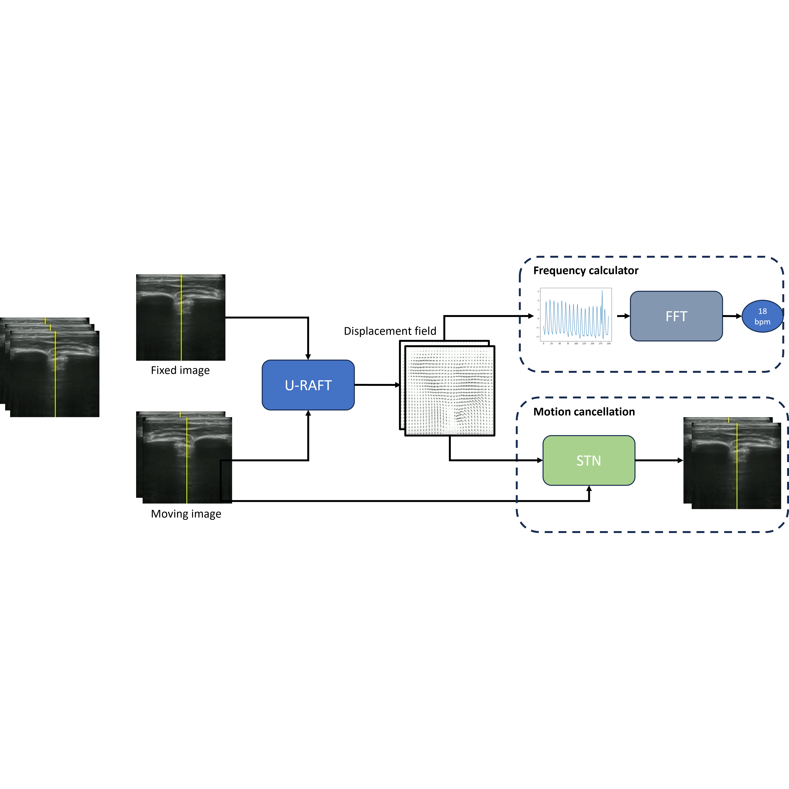
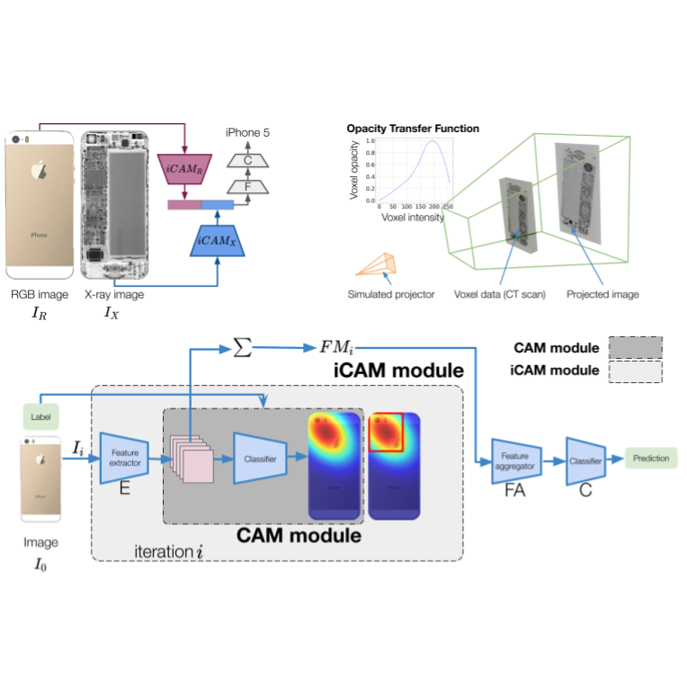
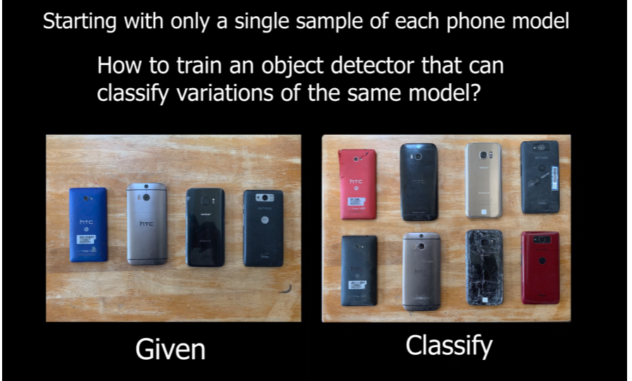
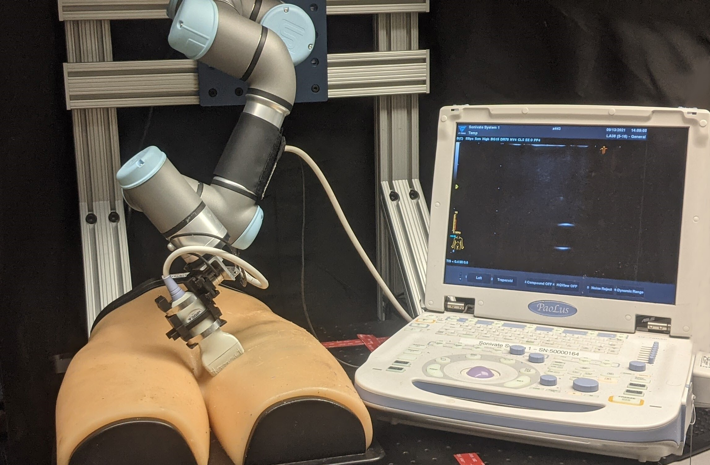
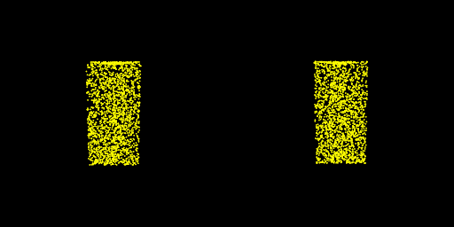

|
FNU Abhimanyu I am a recent graduate from Masters in Robotics(Research) from Carnegie Mellon University where I worked with Dr. Howie Choset and Dr. John Galeotti at the Biorobotics Lab, where I worked on computer vision and machine learning. At CMU, as a master's student and as a research staff, I have developed CV/ML solutions for medical robotics as well as e-waste recycling. My master's thesis was on automating robotic ultrasound systems and improving ultrasound imaging using deep learning methods. I have also worked on the topics of fine-grained image classification, 2D/3D semantic segmentation, 3D reconstruction, novel view synthesis using NeRF, 6D pose estimation using images, and robotic manipulation. |
{kind=link}
ResearchI'm interested in computer vision, machine learning, robotics, |
Updates
|

|
Physics inspired rope manipulation
This research focuses on developing a sophisticated dynamics model for rope manipulation, building upon insights from my previous work on unsupervised deformable registration. In this current project, we aim to decode the intricate relationship between specific actions (such as picking or placing) applied to a rope and the consequent shape changes it undergoes. |

|
Improving Robotic Ultrasound AI using Optical Flow
FNU Abhimanyu, Howie Choset Masters Thesis, CMU, 2023 Thesis / Slides My thesis introduces a robotic ultrasound system with minimal human oversight, using an unsupervised method to estimate displacement fields in varying compression forces, aiding in realistic ultrasound image generation and enhanced vessel segmentation. This versatile approach proves effective in various medical scenarios, including respiratory motion cancellation and curved needle registration, demonstrating broad applicability and improved image quality. |
|

|
U-RAFT: Unsupervised Deformable Ultrasound Image Registration and Its Application for Vessel Segmentation
FNU Abhimanyu, Andrew L. Orekhov, Ananya Bal, John Galeotti, Howie Choset IROS, 2023 (Oral Presentation) paper / video Making RAFT training unsupervised and applying it to predict vessel deformation under forces in ultrasound images. We use this further to generate ultrasound images at multiple force values and improve segmentation by 12% |
|

|
Phy-UGen: Simulating ultrasound image compression by using physics based NN
FNU Abhimanyu, John Galeotti, Howie Choset slides Uses a physics based neural network (PhyDNet) to simulate ultrasound image compression under the application of forces. |
|

|
Unsupervised Deformable Image Registration for Respiratory Motion Compensation in Ultrasound Images
FNU Abhimanyu, Andrew L. Orekhov, John Galeotti, Howie Choset Presented in ICRA, RAMI Workshop'23 in London,UK poster Use Unsupervised RAFT (U-RAFT) to track pixel-movements in lung-ultrasound images to cancel the movement and reconstruct the fixed image. Reduce the pixel movement by 76%. |
|

|
RGB-X Classification for Electronics Sorting
(In collaboration with Apple Inc.)
FNU Abhimanyu, Tejas Zodage, Umesh Thillaivasan, Xinyue Lai, Rahul Chakwate, Javier Santillan, Emma Oti, Ming Zhao, Ralph Boirum Howie Choset, Matthew Travers Presented in IROS'23, Kyoto, Japan. Featured on Apple Machine Learning Research. paper / video RGB- X, a multi-modal image classification approach, that utilizes key features from external RGB images with those generated from X-ray images to accurately classify electronic objects. More specifically, this work develops Iterative Class Activation Mapping (iCAM), a novel network architecture that explicitly focuses on the finer-details in the multi-modal feature maps that are needed for accurate electronic object classification. |
|

|
One shot object detection using data augmentation
(In collaboration with Apple Inc.)
FNU Abhimanyu, Yigit Yakupoglu, Matt Travers, Howie Choset video We propose a one-shot image classification method featuring a novel data randomization approach. This method utilizes 3D point cloud reconstruction to render varied instances of smartphone models, enhancing dataset diversity. We employ cycle-GAN for style transfer between damaged and pristine phones. By using domain randomization, we expand our dataset 500-fold, encompassing diverse scenarios such as cracks, colors, backgrounds, and lighting. This approach significantly improves smartphone detection using YOLOv5. |
|

|
Autonomous Ultrasound Scanning using Bayesian Optimization and Hybrid Force Control
Raghavv Goel*, FNU Abhimanyu*, Kirtan Patel, John Galeotti, Howie Choset Presented in ICRA'22, Philadelphia, USA. paper / video We propose an automated pipeline to use the Bayesian Optimization framework to guide the ultrasound probe to multiple points on the unknown surface. Furthermore, to scan the proposed region, a novel 6-axis hybrid force-position controller is presented to ensure acoustic coupling. |
|

|
Modeling 3D Deformations under External Force from 2D Images
FNU Abhimanyu, Ananya Bal Presented in 16-824, Visual Learning and Recognition by Prof. Deepak Pathak. Our pipeline learns deformation using 3D point clouds of the object deformation, material properties, force and its point of application and predicts a deformed version of the object. As we go from images to point clouds, our method uses 2D RGB images to learn 3D deformations. |
|
Feel free to steal this website's source code. Do not scrape the HTML from this page itself, as it includes analytics tags that you do not want on your own website — use the github code instead. Also, consider using Leonid Keselman's Jekyll fork of this page. |